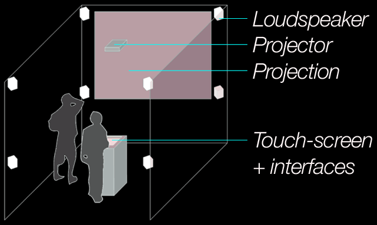
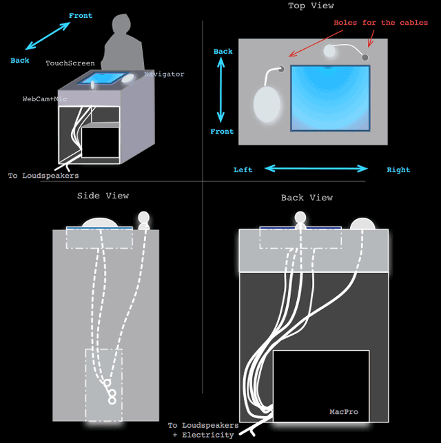

Installation
A generative, interactive audiovisual installation bringing forth a world of creativity and aesthetic play through the embodiment of complex multi-layered generative strata, re-questioning the meanings and relationships of nature, culture, life and beauty.

The installation consists of a projection of a virtual world with touch-screen, video and audio interfaces. The virtual world is a visualization of information flow in open systems interweaving geological, physico-chemical and biological strata. Within this world virtual lifeforms evolve and grow. Spectators can witness, control and create beautiful, complex and generative patterns evolving from the behaviors of the species, as the organisms in turn interact with their dynamic environment. As a spectator gives his/her inputs through the touch screen or other sensors, he/she may change local fields of the environment, landscape or physical laws, and actively observe how the feedback systems produce new behavioral patterns.
The consideration of Artificial Nature as a living system with autonomous creative potential calls for a reconsideration of relationships between artwork, spectator and artist. All three living systems work together in the process of emergent creation. The locus of authorship is shared among a less hierarchical assemblage of living systems. Spectators will be conductors or performers playing a generative multi-domain open work. However, the method to conduct or to perform is not direct. The indirection invoked through the emergent environmental feedback of the A-life agencies is crucial to allow the integration between learning, playing and creating.

